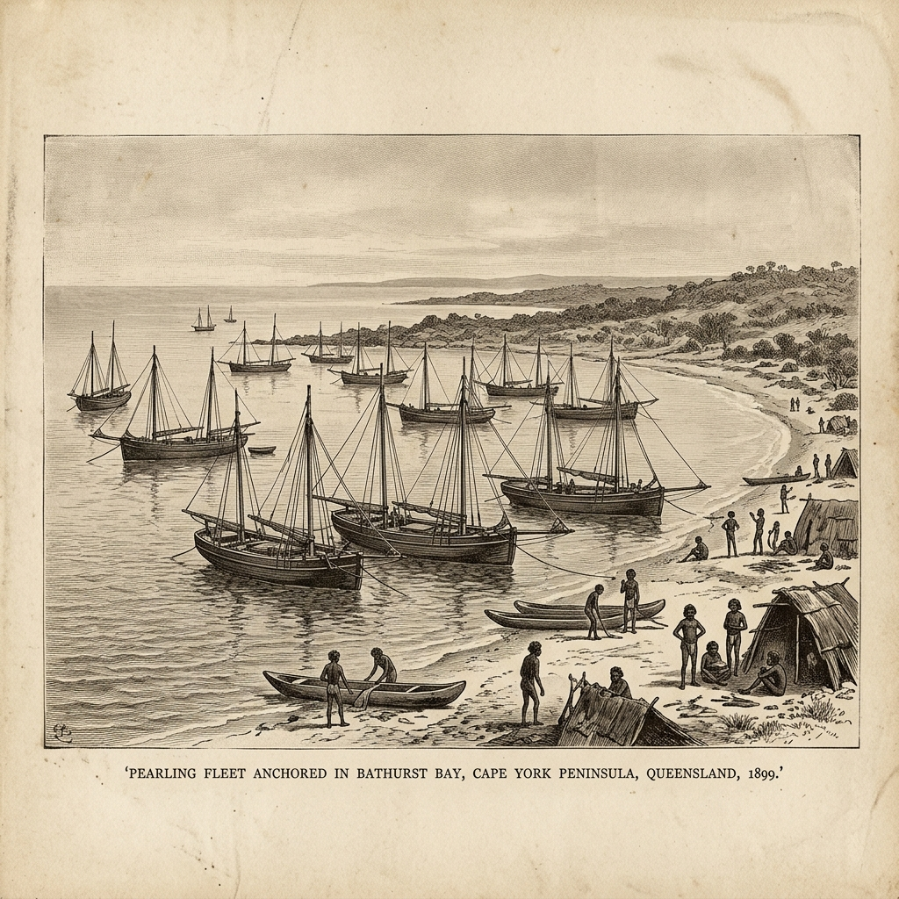

There was no warning. No radio broadcast, no telegraph alert, no Bureau of Meteorology. In the first days of March 1899, over a hundred pearling luggers had gathered at Bathurst Bay on the Cape York Peninsula of Queensland — their holds filling with the pearl shell that was, at the time, one of Australia’s most valuable export commodities. On the decks and in the anchored camps on shore were over 400 people. What happened next would remain the deadliest natural disaster in Australian recorded history.
The pearling industry of the late nineteenth century was a remarkable and brutal enterprise. Operating along the tropical coasts of Queensland and Western Australia, it was fuelled by a multicultural workforce unlike almost anything else in colonial Australia. Indigenous Australian men and women — who had been diving these waters for generations — worked alongside Japanese, Malay, Timorese, Filipinos, and South Sea Islander men, often under conditions that would today constitute forced labour.
These were the men on the luggers anchored at Bathurst Bay when Cyclone Mahina struck on 4 March 1899. Retrospective meteorological analysis suggests the cyclone reached an estimated Category 5 intensity, with a central pressure possibly as low as 914 hPa — which would make it among the most intense tropical cyclones ever recorded in the southern hemisphere. What is not speculation is the storm surge. The wave recorded in the aftermath reached 13 metres above normal sea level — a world record that still stands today.
“I looked for my brother among the wreckage for three days. He was on the lugger nearest the shore. There was nothing left of it. Nothing at all.
The Wave That Moved Dolphins Inland
The surge was so extraordinary that contemporary accounts — later corroborated by geological evidence — recorded dolphins found stranded in trees several kilometres inland. Fish were found on hillsides twenty metres above sea level. These details, once dismissed as exaggeration, have since been accepted by geologists studying tsunami and storm surge deposits in the region.
The entire anchored fleet — over one hundred vessels — was either destroyed outright, driven ashore, or capsized by the surge and the winds preceding it. Those on shore in camps fared no better. The wave moved inland so rapidly that there was no possibility of survival above the surge line. Of the 400 or more people at Bathurst Bay that night, 307 are confirmed to have died. The true number is likely higher, as many crew were never formally recorded.

A Disaster Without Warning
The tragedy of Mahina is inseparable from the era in which it occurred. The Commonwealth of Australia did not yet exist — it would be proclaimed less than two years later, in January 1901. The meteorological infrastructure that would eventually save tens of thousands of lives in later cyclones was still in its infancy. No telegraph line reached the remote Cape York coast. No systematic cyclone tracking existed.
The pearling masters, experienced as they were at reading weather, had no instruments that could detect the extraordinarily rapid intensification of Mahina as it approached from the Coral Sea. By the time the rapidly falling barometer told them something was catastrophically wrong, the surge was already hours away.